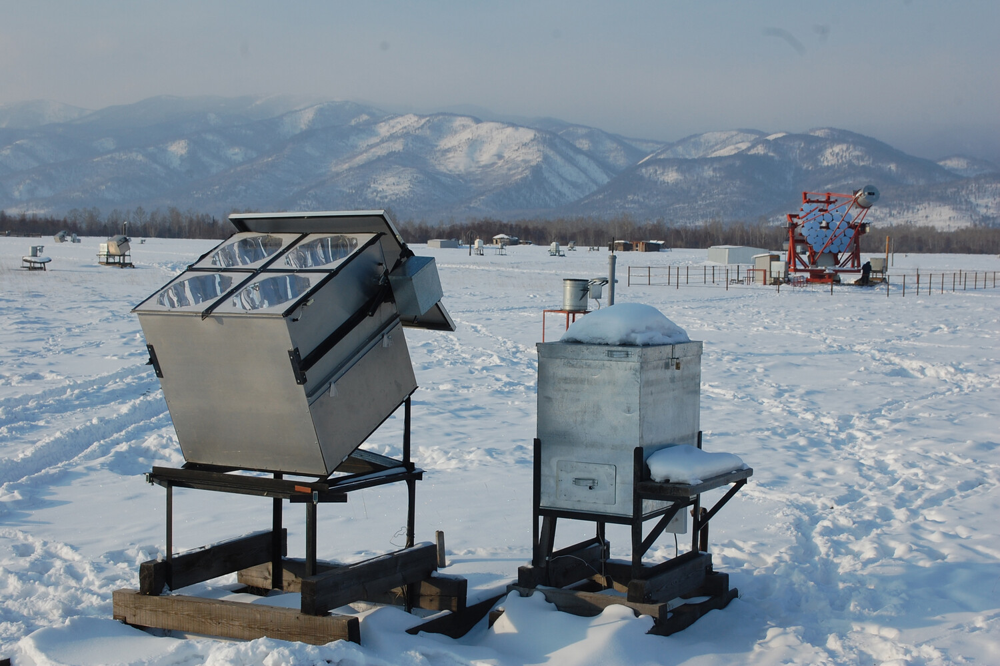
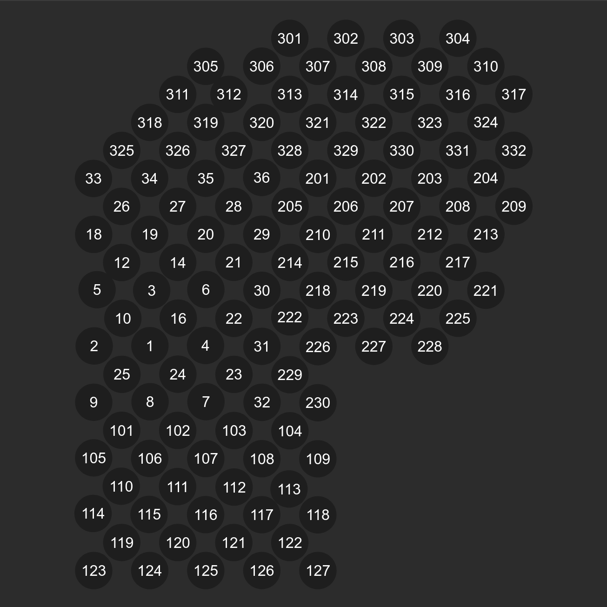
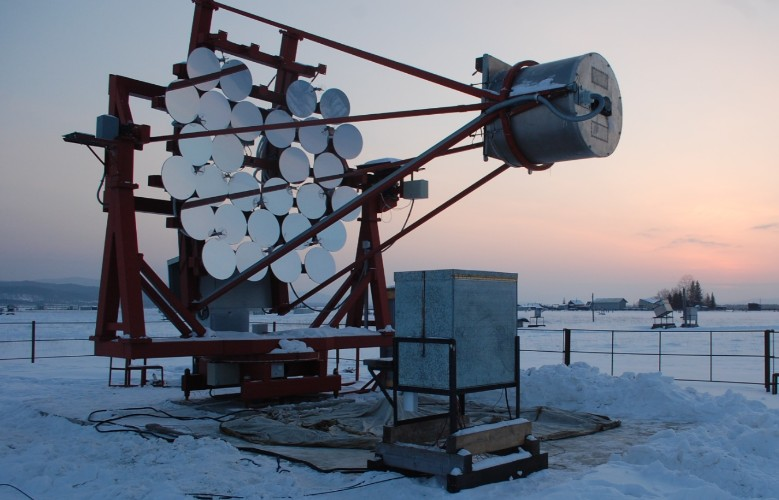
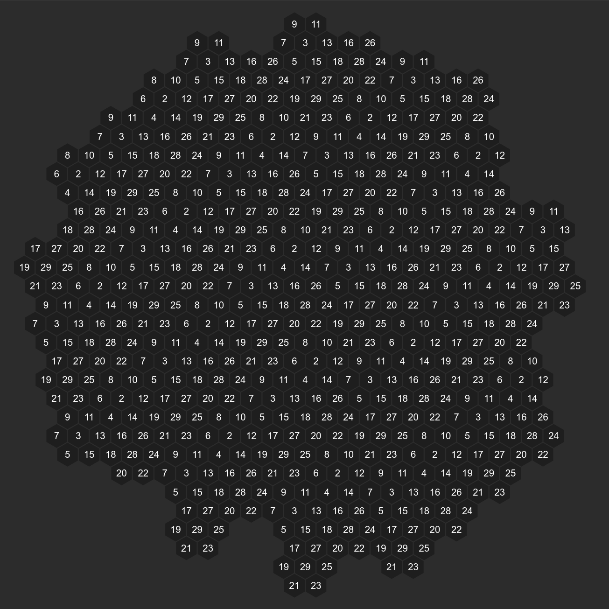
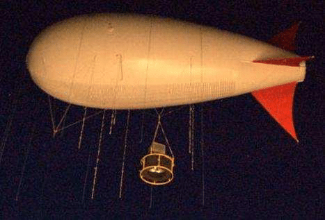
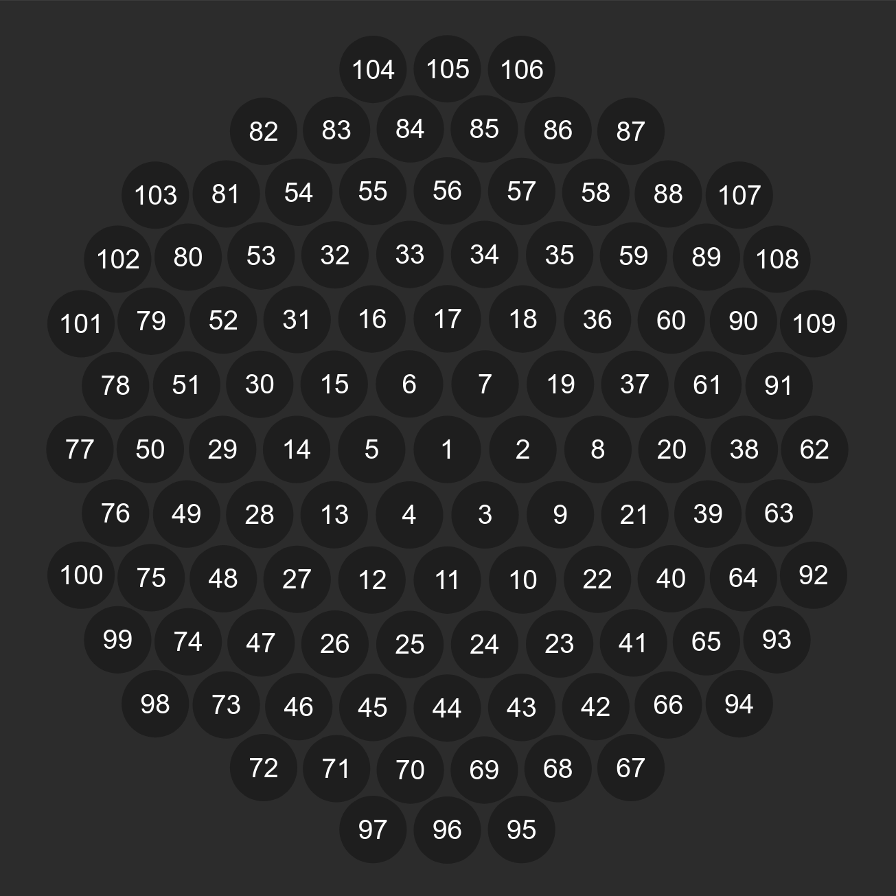
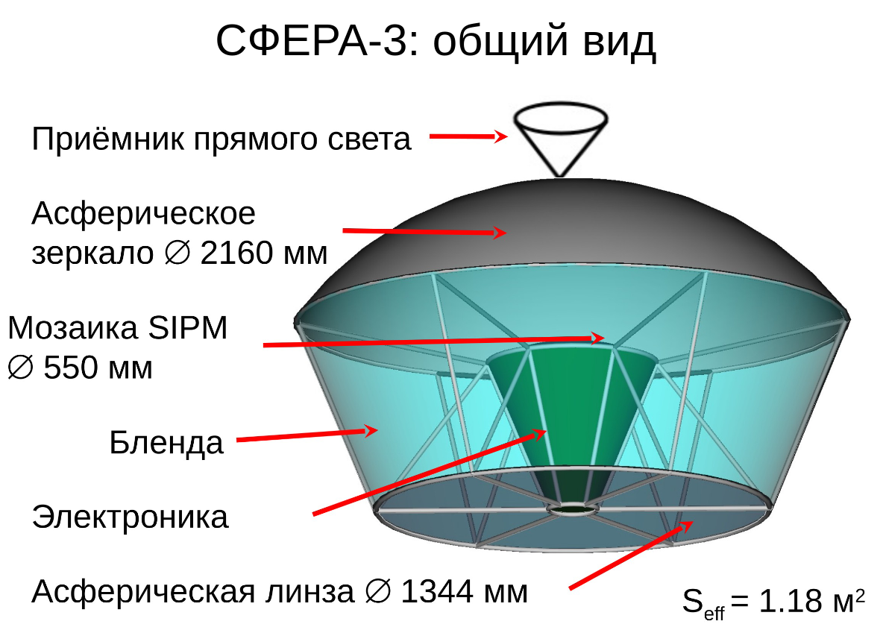
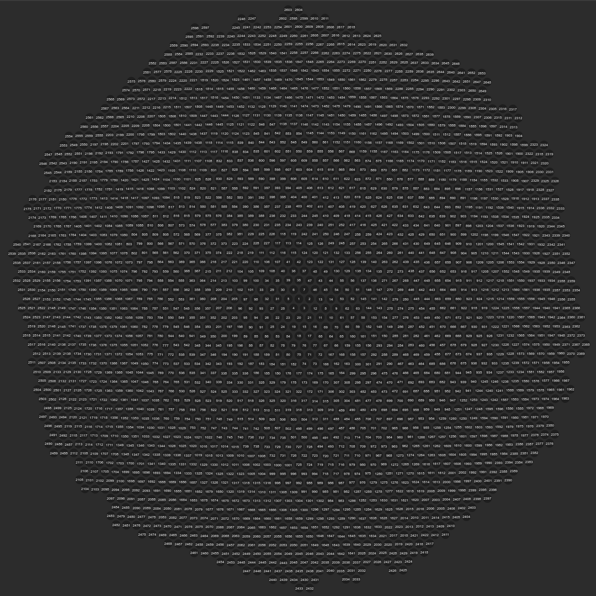

HiSCORE


Веб-приложение для визуализации данных установок, измеряющих параметры Широких Атмосферных Ливней (ШАЛ)
↓Разработка веб-приложения CherenkovWeb, позволяющего визуализировать данные с установок, измеряющих параметры Широких Атмосферных Ливней
HiSCORE


IACT1


СФЕРА-2


СФЕРА-3

